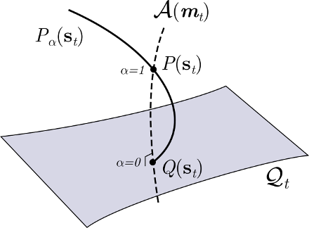

  
<p align="justify">
A major challenge in cognitive neuroscience is to understand how behaviour arises from the dynamical interaction of an organism’s nervous system, its body, and its environment. Understanding embodied neural activity involves the resolution of various conceptual, technical and methodological issues in explaining how living organisms self-organize at many levels (from neural bio-chemistry to behaviour and learning). Currently, two important obstacles hinder this endeavour: the difficulties in recording neural activity in behaving animals, and the lack of mathematical tools to characterize the complex brain-body-environment interactions in living organisms. This project addresses these limits by implementing an interdisciplinary combination of novel animal behaviour neuroimaging setups and large-scale statistical methods, with the goal of recording and modelling whole-brain activity of locomoting vertebrates. We will study fictively swimming larval zebrafish during active behaviour in a pioneering experimental setup, recording neural activity utilizing light-sheet microscopy for calcium imaging in different virtual reality scenarios involving sensorimotor manipulations. In this setup, we will collect data from the distributed neural circuits that integrate sensory signals from the environment (exafferent input) and their own movements (reafferent input), as well as plastic processes of habituation to new sensorimotor contingencies. From this data, we will infer large-scale generative models (i.e. models capable of yielding synthetic data resembling the studied phenomena) of embodied neural circuits by complementing dynamical models and techniques from statistical mechanics with innovative information theoretic and Bayesian inference methods and approximations for very large systems in non-equilibrium and non-stationary conditions.
</p>
